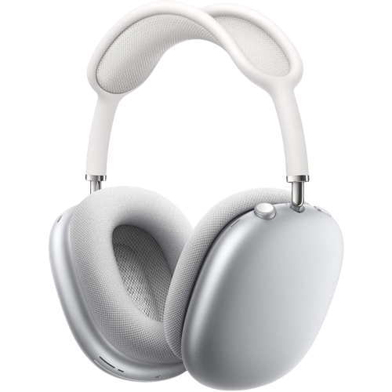

LO QUE TENES QUE SABER DE ESTE PRODUCTO
Controlador dinámico diseñado por Apple para un sonido de alta fidelidad.
Cancelación Activa de Ruido que bloquea el ruido exterior para que puedas sumergirte por
completo en lo que estás escuchando.
Modo Ambiente para que escuches todo lo que ocurre a tu alrededor y puedas interactuar con tu
entorno.
Audio espacial con seguimiento dinámico del movimiento de la cabeza para crear un sonido
envolvente como en el cine (1).
Audio computacional que combina un diseño acústico con el chip H1 y el software de Apple para
brindar un sonido revolucionario.
Diseñados con una diadema de malla tejida y almohadillas de espuma viscoelástica para un
ajuste excepcional.
Fácil configuración, sistema de detección de uso y cambio inmediato de dispositivo para ofrecer
una experiencia mágica (2).
Comparte fácilmente lo que estás escuchando entre dos pares de AirPods conectados a tu
iPhone, iPad, iPod touch o Apple TV.
20 horas de audio, reproducción de video y llamadas con la Cancelación Activa de Ruido y el
audio espacial activados (3)
Consumo de energía ultrabajo cuando están guardados en la delgada funda Smart Case.
Disponibles en color plata, gris espacial, azul cielo, verde y rosa.
